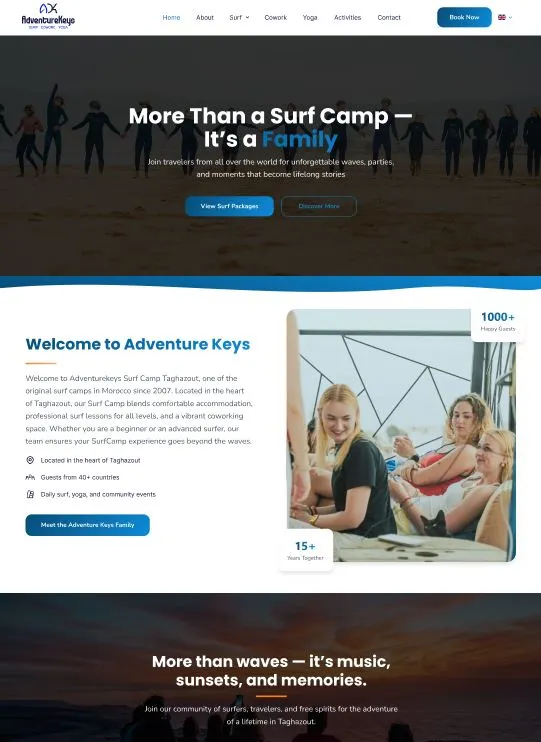

Chaque projet est pensé pour inspirer confiance, clarifier votre offre et transformer vos visiteurs en demandes qualifiées.



Tout ce qu'il faut savoir avant de lancer votre projet avec nous.
Nous livrons la plupart des sites en 7 à 14 jours, selon la complexité du projet. Vous pourrez bien sûr valider et demander des modifications avant la mise en ligne.
C'est simple. Il suffit de nous envoyer un message sur WhatsApp. Nous analysons votre besoin et vous proposons une solution rapidement.
Oui. Votre site est conçu pour être facile à gérer, vous pourrez modifier les textes, images et contenus sans compétences techniques.
Oui, votre projet inclut 2 séries de révisions afin d'ajuster le site selon vos besoins.
Nous créons des sites entièrement sur mesure, codés de zéro pour la performance, la rapidité et un design qui se démarque. Pas de templates, pas de constructeurs de pages. Chaque site est adapté à vos objectifs et conçu pour convertir.
Oui. Nos sites sont pensés pour la conversion, avec une structure claire, des appels à l'action efficaces et une intégration WhatsApp pour transformer vos visiteurs en clients.
Une fois le site en ligne, vous avez un accès complet. Nous proposons également une offre de maintenance mensuelle pour gérer les mises à jour, modifications et support.